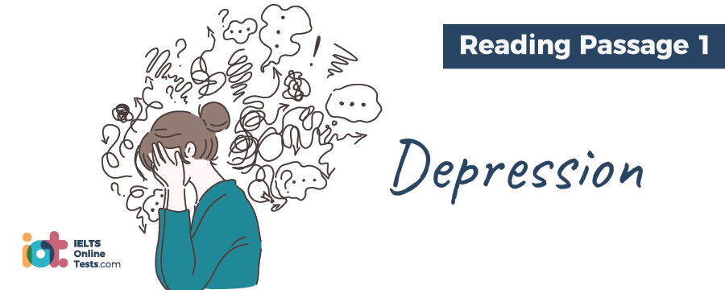

Part 1
READING PASSAGE 1
You should spend about 20 minutes on Questions 1-13, which are based on Reading Passage 1 below.

DEPRESSION
A. It is often more difficult for outsiders and non-sufferers to understand mental rather than physical illness in others. While it may be easy for us to sympathise with individuals living with the burden of a physical illness or disability, there is often a stigma attached to being mentally ill, or a belief that such conditions only exist in individuals who lack the strength of character to cope with the real world. The pressures of modern life seem to have resulted in an increase in cases of emotional disharmony and government initiatives in many countries have, of late, focussed on increasing the general public’s awareness and sympathy towards sufferers of mental illness and related conditions.
B. Clinical depression, or ‘major depressive disorder’, a state of extreme sadness or despair, is said to affect up to almost 20% of the population at some point in their lives prior to the age of 40. Studies have shown that this disorder is the leading cause of disability in North America; in the UK almost 3 million people are said to be diagnosed with some form of depression at any one time, and experts believe that as many as a further 9 million other cases may go undiagnosed. World Health Organisation projections indicate that clinical depression may become the second most significant cause of disability’ on a global scale by 2020. However, such figures are not unanimously supported, as some experts believe that the diagnostic criteria used to identify՛ the condition are not precise enough, leading to other types of depression being wrongly classified as ‘clinical’.
C. Many of us may experience periods of low morale or mood and feelings of dejection, as a natural human response to negative events in our lives such as bereavement, redundancy or breakdown of a relationship. Some of us may even experience periods of depression and low levels of motivation which have no tangible reason or trigger. Clinical depression is classified as an on-going state of negativity, with no tangible cause, where sufferers enter a spiral of persistent negative thinking, often experiencing irritability, perpetual tiredness and listlessness. Sufferers of clinical depression are said to be at higher risk of resorting to drug abuse or even suicide attempts than the rest of the population.
D. Clinical depression is generally diagnosed when an individual is observed to exhibit an excessively depressed mood and/or ‘anhedonia’ – an inability to experience pleasure from positive experiences such as enjoying a meal or pleasurable social interaction – for a period of two weeks or more, in conjunction with five or more additional recognised symptoms. These additional symptoms may include overwhelming feelings of sadness; inability to sleep, or conversely, excessive sleeping; feelings of guilt, nervousness, abandonment or fear; inability to concentrate; interference with memory capabilities; fixation with death or extreme change in eating habits and associated weight gain or loss.
E. Clinical depression was originally solely attributed to chemical imbalance in the brain, and while anti-depressant drugs which work to optimise levels of ‘feel good’ chemicals – serotonin and norepinephrine – are still commonly prescribed today, experts now believe that onset of depression may be caused by a number, and often combination of, physiological and socio-psychological factors. Treatment approaches vary quite dramatically from place to place and are often tailored to an individual’s particular situation; however, some variation of a combination of medication and psychotherapy is most commonly used. The more controversial electroconvulsive therapy (ECT) may also be used where initial approaches fail. In extreme cases, where an individual exhibits behaviour which Indicates that they may cause physical harm to themselves, psychiatric hospitalisation may be necessary as a form of intensive therapy.
F. Some recent studies, such as those published by the Archives of General Psychiatry, hold that around a quarter of diagnosed clinical depression cases should actually be considered as significant but none-the-less ordinary sadness and maladjustment to coping with trials in life, indicating that in such cases, psychotherapy rather than treatment through medication is required. Recovery as a result of psychotherapy tends, in most cases, to be a slower process than improvements related to medication; however, improvements as a result of psychological treatment, once achieved, have been observed in some individuals to be more long term and sustainable than those attained through prescription drugs. Various counselling approaches exist, though all focus on enhancing the subject’s ability to function on a personal and interpersonal level. Sessions involve encouragement of an individual to view themselves and their relationships in a more positive manner, with the intention of helping patients to replace negative thoughts with a more positive outlook.
G. It is apparent that susceptibility to depression can run in families. However, it remains unclear as to whether this is truly an inherited genetic trait or whether biological and environmental factors common to family members may be at the root of the problem. In some cases, sufferers of depression may need to unlearn certain behaviours and attitudes they have established in life and develop new coping strategies designed to help them deal with problems they may encounter, undoing patterns of destructive behaviour they may have observed in their role models and acquired for themselves.
Part 2
READING PASSAGE 2
You should spend about 20 .minutes on Questions 14-27, which are based on Reading Passage 2 below.

THE FACE OF MODERN MAN?
A. In response to the emergence of the ‘metro-sexual’ male, In other words, an urban, sophisticated man who is fashionable, well-groomed and unashamedly committed to ensuring his appearance is the best it can be, a whole new industry has developed. According to research conducted on behalf of a leading health and beauty retailer in the UK, the market for male cosmetics and related products has grown by 800% since the year 2000 and is expected to continue to increase significantly. The male grooming products market has become the fastest growing sector within the beauty and cosmetics industry, currently equivalent to around 1.5 billion pounds per annum.
B. Over the last decade, a large number of brands and companies catering for enhancement of the male image have been successfully established, such operations ranging from male-only spas, boutiques, personal hygiene products, hair and skin care ranges, and male magazines with a strong leaning towards men’s fashion. Jamie Cawley, proprietor of a successful chain of London-based male grooming boutiques, holds that his company’s success in this highly competitive market can be attributed to the ‘exclusivity’ tactics they have employed, in that their products and services are clearly defined as male- orientated and distinctly separate to feminine products offered by other organisations. However, market analyst, Kim Sawyer, believes that future growth in the market can also be achieved through sale of unisex products marketed to both genders, this strategy becoming increasingly easy to implement as men’s interest in appearance and grooming has become more of a social norm.
C. Traditionalists such as journalist Jim Howrard contend that the turn-around in male attitudes which has led to the success of the industry w’ould have been inconceivable a decade ago, given the conventional male role, psyche and obligation to exude masculinity; however, behavioural scientist Professor Ruth Chesterton argues that the metro-sexual man of today is in fact a modern incarnation of the ‘dandy’ of the late eighteenth and early nineteenth century. British dandies of that period, who were often of middle class backgrounds but imitated aristocratic lifestyles, were devoted to cultivation of their physical appearance, development of a refined demeanour and hedonistic pursuits. In France, she adds, dandyism, in contrast, was also strongly linked to political ideology and embraced by youths wishing to clearly define themselves from members of the working class revolutionary social groups of the period.
D. Over recent decades, according to sociologist Ben Cameron, gender roles for both sexes have become less defined. According to research, he says, achievement of status and success have become less important in younger generations of men, as has the need to repress emotions. Cameron defines the traditional masculine role within western societies – hegemonic masculinity – as an expectation that males demonstrate physical strength and fitness, be decisive, self-assured, rational, successful and in control. Meeting this list of criteria and avoiding situations of demonstrating weakness, being overly emotional or in any way ’inferior’, he says, has placed a great deal of pressure on many members of the male population. So restrictive can society’s pressure to behave in a ‘masculine’ fashion on males be, Professor Chesterton states that in many situations men may respond in a way they deem acceptable to society, given their perceived gender role, rather than giving what they may actually consider to be the best and most objective response.
E. Jim Howard says that learning and acquiring gender identity makes up a huge component of a child’s socialisation and that a child who exhibits non-standard behavioural characteristics often encounters social and self image difficulties due to the adverse reactions of their peers. According to Kim Sawyer, media images and messages also add to pressures associated with the male image, stating that even in these modern and changing times, hegemonic masculinity is often idolised and portrayed as the definitive male persona.
F. Whilst male stereotypes and ideals vary from culture to culture, according to Professor Chesterton, a universal trait in stereotypical male behaviour is an increased likelihood to take risks than is generally found in female behaviour patterns. For this reason, she attributes such behaviour to the influence of genetic predisposition as opposed to socially learned behaviour. Men, she says, are three times more likely to die due to accident than females, a strong indication he says of their greater willingness to involve themselves in precarious situations. Ben Cameron also says that an attitude of invincibility is more dominant in males and is a predominant factor in the trend for fewer medical checkups in males and late diagnosis of chronic and terminal illness than in their more cautious and vigilant female counterparts.
G. Jamie Cawley, however, remains optimistic that the metro-sexual culture will continue and that what society accepts as the face of masculinity will continue to change. He attributes this to a male revolt against the strict confines of gender roles, adding that such changes of attitudes have led and will continue to lead to establishment of greater equality between the sexes.
Part 3
READING PASSAGE 3
You should spend about 20 minutes on Questions 28-40, which are based on Reading Passage 3 below.

CLINICAL TRIALS
A. The benefits of vitamins to our well-being are now familiar to most; however, when the link between diets lacking in citrus fruits and the development of the affliction ‘scurvy’ in sailors was first discovered by James Lind in 1747, the concept of vitamins was yet to be discovered. Scurvy, which causes softening of the gums, oral bleeding and, in extreme cases, tooth loss, is now known to present as a result of lack of Vitamin C in the diet. Additional symptoms include depression, liver spots on the skin – particularly arms and legs – loss of colour in the face and partial immobility; high incidence of the ailment aboard ships took an enormous toll on the crew’s ability to complete essential tasks while at sea.
B. Suggestions that citrus fruit may lower the incidence or indeed prevent scurvy had been made as early as 1600. It was Lind, however, who would conduct the first clinical trial by studying the effect within scientific experimental parameters. However, while the correlation between consuming citrus fruit and avoidance of scurvy was established, the preventative properties were attributed to the presence of acids in the fruit and not what would later be identified as vitamin content.
C. Lind’s subjects for his trial consisted of twelve sailors already exhibiting symptoms of scurvy. These individuals were split into six groups; each pair common diet. Pair 1 were rationed a daily quart of cider, pair 2 elixir of vitriol, pair 3 a given quantity of vinegar, pair 4 seawater, pair 5 oranges and a lemon and pair 6 barley water. Despite the trial having to be aborted after day five, when supplies of fruit were depleted, the findings of the interventional study showed that only the control group who were given fruit supplements showed any significant improvement in their condition (one had, in fact, recovered to the extent that he was fit enough to return to work). The immediate impact on sailors’ health and incidence of scurvy on board ship was, however, limited as Lind and other physicians remained convinced that the curative effect was acid based. Therefore, while consumption of citrus fruit was recommended, it was often replaced by cheaper acid supplements. The preventative Qualities of citrus fruit against scurvy were not truly recognised until 1800, though throughout the latter part of the 1700s, lemon juice was increasingly administered as a cure for sailors already afflicted.
D. Nowadays, the implementation of findings discovered in clinical trials into mainstream medicine remains an arduous and lengthy process and the clinical trials themselves represent only a small stage of the process of developing a new drug from research stage to launch in the marketplace. On average, for every thousand drugs conceived, only one of the thousand actually makes it to the stage of clinical trial, other projects being abandoned for a variety of reasons. Stages which need to be fulfilled prior to clinical trial – where the treatment is actually tested on human subjects -include discovery, purification, characterisation and laboratory testing.
E. A new pharmaceutical for treatment of a disease such as cancer typically takes a period of 6 years or more before reaching the stage of clinical trial. Since legislation requires subjects participating in such trials to be monitored for a considerable period of time so that side-effects and benefits can be assessed correctly, a further eight years typically passes between the stage of a drug entering clinical trial and being approved for general use. One of the greatest barriers to clinical trial procedures is availability of subjects willing to participate. Criteria for selection is rigorous and trials where subjects are required to be suffering from the disease in question, experience tremendous recruitment difficulties as individuals already vulnerable due to the effects of their condition, are often reluctant to potentially put their health at higher levels of risk.
F. Clinical trials are conducted in line with a strict protocol and the stages of a trial are generally defined by five distinct phases. A drug that is deemed safe and effective enough to reach the end of stage three is most often, at that point, approved for use in mainstream medicine. Phase 0 involves a first-in-human trial (usually conducted using a small population often to fifteen subjects) with the purpose of ascertaining that the drug’s effect is, in fact, the same as predicted in pre-clinical studies. If no concerns are raised, the drug then enters Phase 1 of trial where a modest selection (usually between twenty and eighty subjects) of usually healthy volunteers, is exposed to the drug. However, for HIV and cancer drugs, this stage is conducted using patients suffering from the condition in question. There are two main variations of Phase I testing, these being SAD (single ascending dose) and MAD (multiple ascending dose). The former involves a single administration of a drug at a pre-determined level to one group of subjects, and the second involves administration of a pre-determined sequence of dosages.
G. Phases 0 and 1 are geared towards establishing the safety of a pharmaceutical and once this has been confirmed, drugs pass into Phase II testing where, while safety continues to be monitored, the drug’s effectiveness is also assessed using a larger group of subjects, ranging from twenty up to three hundred. In some trials, Phase II is regarded as involving two sub-stages, in that Phase 11(a) may be concerned with establishing optimum dosage levels and Phase 11(b) to evaluate effectiveness. Phase III is the most expensive, time-consuming and complex stage of the trial process, often involving as many as 3000 patients. At this stage, a new drug’s effectiveness is rigorously tested and compared to that of the best of the existing alternatives already approved and in common use. Where research indicates that a pharmaceutical has passed all requirements of Phases 0, I, II and III, submissions to relevant regulatory and licensing bodies are then made.
H. The final phase of clinical testing, Phase IV, is conducted over a lengthy period of time post-launch for general usage. This stage is, in essence, a safety net which involves continued monitoring of the drug, its properties and side-effects through which any long term adverse reactions, which remained undetected in the pre-launch clinical testing time frame can be discovered. Identification of harmful effects at this stage, on occasion, has led to withdrawal of a drug from the market; for example, as was the case with cerivastin, a cholesterol-lowering drug, which was later found to have an adverse effect on muscle reaction which, on occasion, had fatal consequences.
Part 1
Questions 1-5
Reading Passage 1 has seven sections A-G.
Which paragraph contains the following information?
Write the correct letters A-G in boxes 1-5 on your answer sheet.
1.
2.
3.
4.
5.
Questions 6-8
Choose THREE letters A-G.
Write your answers in boxes 6-8 on your answer sheet.
NB Your answers may be given in any order
Which THREE of the following statements are true of depression?
Questions 9-13
Complete the summary of paragraphs F and G with the list of words A-L below.
Write the correct letter A-L in boxes 9-13 on your answer sheet.
Whilst recovery through counselling rather than medicine may be more 9.
Counselling sessions are geared towards improving the subject’s relationship with others and their own 11.
The extent to which genetic disposition and sociological factors impact on state of mind is 13.
| A. | gratifying | |
| B. | longevity | |
| C. | ambition | |
| D. | optimistic | |
| E. | pessimistic | |
| F. | difficulty | |
| G. | inconclusive | |
| H. | self-image | |
| I. | gradual | |
| J. | unequivocal | |
| K. | immediate | |
| L. | categorical |
Part 2
Questions 14-18
Reading Passage 2 has seven paragraphs A-G.
Choose the correct heading for paragraphs B-D and F-G from the list of headings below.
Write the correct number i to viii in boxes 14-18 on your answer sheet.
| List of Headings | ||
| i. | Basis and predictions | |
| ii. | Revolution or recurrence? | |
| iii. | Servicing a growing demand | |
| iv. | The surfacing of a new phenomenon | |
| v. | A long-held mindset and its downsides | |
| vi. | Influence on minors | |
| vii. | Hereditary predilection | |
| viii. | Effects of external pressures | |
Example: Paragraph E; Answer: viii
14.
15.
16.
17.
18.
Questions 19-22
Do the following statements agree with the information given in Reading Passage 2?
In boxes 19-22 on your answer sheet, write
| TRUE. | if the statement agrees with the information | |
| FALSE. | if the statement contradicts the information | |
| NOT GIVEN. | If there is no information on this |
19.
20.
21.
22.
Questions 23-27
Look at the following list of statements (Questions 23-27) based on changes in male image and behavior.
Match each statement with the correct person A-E.
Write the correct letters A-E in boxes 23-27 on your answer sheet.
23.
24.
25.
26.
27.
| List of Contributors | ||
| A. | Jamie Cawley | |
| B. | Kim Sawyer | |
| C. | Jim Howard | |
| D. | Professor Ruth Chesterton | |
| E. | Ben Cameron | |
Part 3
Questions 28-31
Complete the sentences below.
Choose NO MORE THAN TWO WORDS from the passage for each answer.
Write your answers in boxes 28-31 on your answer sheet.
In advanced cases of scurvy suffers may experience 28 along with numerous other symptoms.
Fruit adds were mistakenly heralded as having 29 in incidents of scurvy prior to the identification of vitamins.
Lind’s subjects for the first clinical trial were seamen who were at the time of 30 the condition in question.
All groups in Lind’s experiment were given a 31 along with specific rations which were varied for each control group.
Questions 32-35
Choose the correct letter A, B, C or D
Write your answers in boxes 32 – 35 on your answer sheet
Questions 36-40
Complete the flowchart
Choose ONE WORD ONLY from the passage for each answer.
Write your answers in boxes 36-40 on your answer sheet.
Phases of Clinical Testing
| Phase 0 10-15 subjects tested to confirm assumptions made in the 36 stages were accurate. |
| Phase I 2 different approaches may be used. One involving one-off exposure to the drug the other involving a 37 |
| Phase II May involve two sub-stages to establish 38 quantities and usefulness. |
| Phase III The most 39 , protracted and costly of all stages. Submissions made post-testing at this stage of all is agreeable. |
| Phase IV Precautionary monitoring continues post-launch. Any serious issues uncovered can, on occasion, result in 40 |